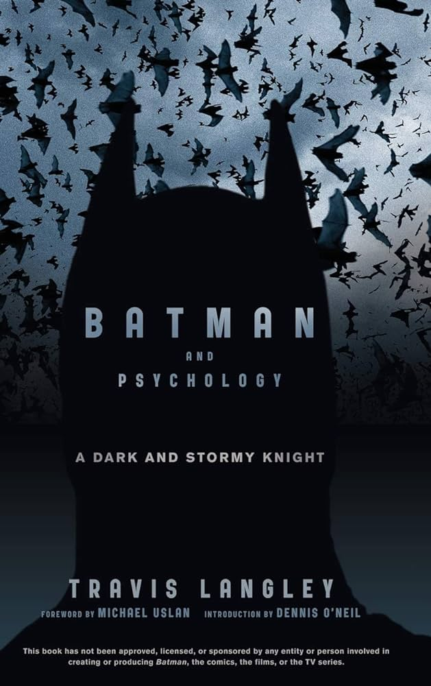

Favorite Book
Batman and Psychology: A Dark and Stormy Knight explores Batman's motivations and actions, as well as those of his foes. Dr. Langley investigates what happens when childhood trauma is untreated in the Dark Knight's life, and how villains helped to shape his crime-fighting identity.
Favorite Song
Invisible by Duran Duran is one of my favorite songs. It is a song about being invisible and how it can be a good thing. It is a song that I can relate to because I sometimes feel like a shy person and I often feel invisible.
Favorite Movie
Robocop is a movie about Alex Murphy, a police officer who is brutally murdered by a gang of criminals. He is then brought back to life as a cyborg to fight crime in Detroit.